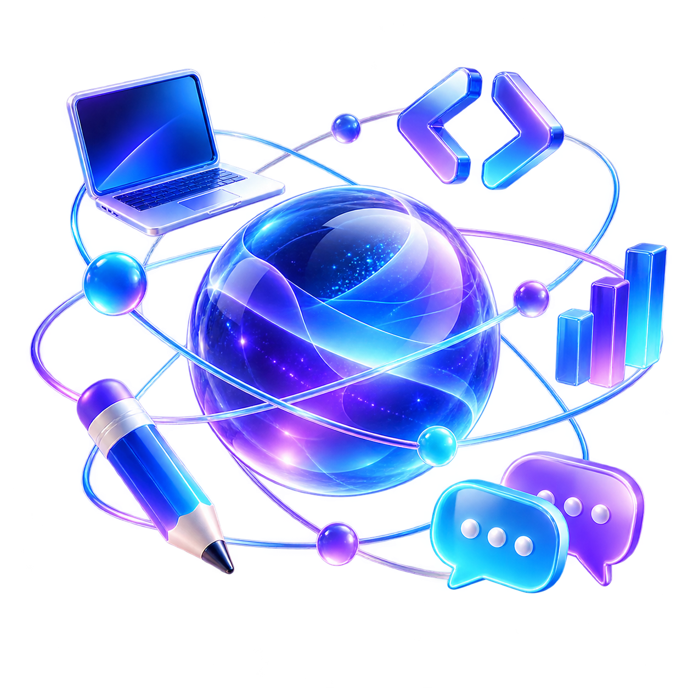

Bring a fresh perspective.
Spotted a problem worth solving? Share your idea with the community and find people who can help move it forward.
Start a conversation + tech orbitCOMMUNITY HUBJoin the community +
tech orbitCOMMUNITY HUBJoin the community +Developers. Data thinkers. Designers. Dreamers.
Find your people, share your spark, and turn bold ideas into something real.

We’re on a mission to become Kerala’s biggest community of people who learn, create, and support one another.
Tech is our starting point. Your curiosity is what matters. Whether you’re writing your first line of code, analysing complex data, building a business, or exploring a new field, there’s a place for you here.
Small conversations lead to big possibilities.
Explore the spaces inside our community.
Find collaborators, exchange feedback, and turn real-world problems into projects. Bring an idea, a skill, or the willingness to figure it out together.
Spotted a problem worth solving? Share your idea with the community and find people who can help move it forward.
Start a conversation +A useful resource, a lesson from your work, or a question you’re exploring. Small contributions can make someone’s next step easier.
Share with the circle +Take part in discussions, suggest a meetup, and connect with people beyond your own field. Help someone build their confidence.
Meet your community +A learner today. A collaborator tomorrow.
Let’s see what we can build together.
No. We welcome students, beginners, experienced professionals, and people from other fields. Curiosity and a willingness to support others matter more than your job title.
Our hub is on WhatsApp, with spaces for Builders, Learning Circle, General, and Announcements. Open the invite link to join and explore the available groups.
Absolutely. Share your project idea, suggest a topic for a discussion or meetup, or offer to help someone. Coordinate meeting plans with the community admins.
Kerala is our home and the focus of our ambition. People from anywhere are welcome to connect, contribute, and learn with us.